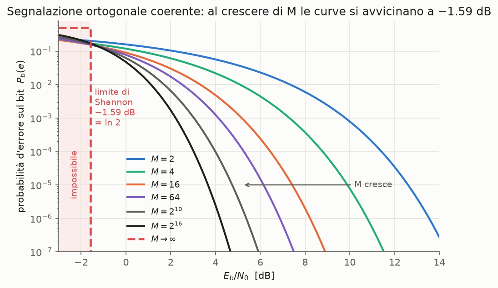
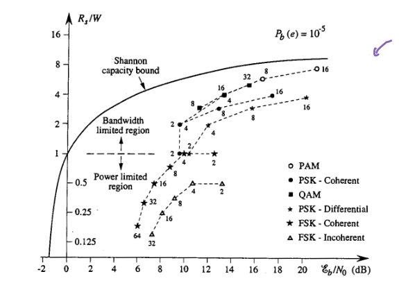

Home · Lezioni · Lezione 12 · 03/11
Parametri globali delle modulazioni e capacità di canale
Informazione mutua, capacità e canale AWGN; banda di Shannon, efficienza spettrale e in potenza; frontiera di Shannon; link budget.
Indice della lezione
- Obiettivi e introduzione
- Informazione mutua e capacità
- Informazione mutua
- Dimostrazione di I=H(Y)-H(Y\mid X)
- Informazione mutua ed entropia
- Capacità di canale
- Secondo teorema di Shannon
- Capacità del canale AWGN
- Capacità del canale AWGN
- Interpretazione della capacità AWGN
- Banda dei segnali digitali
- Banda dei segnali digitali
- Banda di Shannon
- Potenza, energia per bit ed efficienze
- Potenza media ed energia per bit
- SNR ed efficienza spettrale
- Rumore in banda e rumore bianco
- Efficienza in potenza
- Probabilità d'errore e ruolo di \eta_P
- Confronto tra modulazioni
- Parametri globali
- Compromesso energia-banda
- Il limite di Shannon
- Dai parametri globali al limite di Shannon
- Frontiera di Shannon
- Interpretazione fisica del limite
- Compromessi nella scelta della modulazione
- Link budget
- Elementi di un link budget
- Potenza di rumore e sensibilità
- Equazione di Friis e path loss
- Link budget in scala logaritmica
- Esempio: collegamento WLAN a 5 GHz
- Dati e bit rate
- Sensibilità del ricevitore
- Path loss ammissibile e portata
- Osservazione finale sull'esempio
- Messaggio conclusivo
- Spiegazioni e dimostrazioni passo-passo
- Domande da esame
Il corso, slide per slide
Obiettivi e introduzione
- Obiettivi: introdurre informazione mutua e capacità di canale come limiti teorici fondamentali; definire i parametri globali con cui si confrontano gli schemi di modulazione (efficienza spettrale, efficienza in potenza, rapporto E_b/N_0); confrontare le modulazioni reali con il limite di Shannon; mostrare come questi concetti entrano nel link budget di un collegamento reale.
- La domanda di velocità sempre maggiori rende importante sapere qual è la massima velocità di trasmissione ottenibile su un canale.
- La capacità di canale (Shannon) è la massima velocità per cui si può ottenere una probabilità d'errore piccola a piacere. È definita senza vincoli di complessità o di ritardo. Per il canale AWGN ha un'espressione in forma chiusa particolarmente semplice.
- Appunti a lezione: superare la capacità significa non poter avere una P(e) arbitrariamente piccola, qualunque sia lo schema di modulazione.
🧩 Cosa vuol dire «senza vincoli di complessità o di ritardo». La capacità dice quanto si può trasmettere ammesso di poter usare un ricevitore e un trasmettitore qualsiasi, per quanto complicati e lenti. 📚 Nella dimostrazione di Shannon la P(e) diventa piccola a piacere solo raggruppando i bit in blocchi (parole di codice) sempre più lunghi, al limite infinitamente lunghi. Questo ha due costi che il teorema ignora:
- complessità: con blocchi di n simboli a rate R le parole di codice possibili sono 2^{nR}, e il decodificatore ottimo dovrebbe confrontare quello che riceve con tutte; il numero cresce in modo esponenziale con n (è lo stesso problema dell'MLSE della Lezione 14, che con la forza bruta deve scegliere tra M^{K+1} sequenze);
- ritardo: il ricevitore può decidere solo dopo aver ricevuto tutto il blocco, quindi più il blocco è lungo, più tempo passa tra l'invio di un bit e la sua decisione. È il ritardo di cui parlano gli appunti.
Un sistema reale ha complessità e ritardo finiti (un telefono non può aspettare minuti né fare conti infiniti), quindi resta sotto la capacità. Per questo la capacità è un limite che si avvicina ma non si raggiunge: è il «margine di miglioramento», che la codifica di canale riduce.
Informazione mutua e capacità
Informazione mutua
- Per un canale senza memoria con ingresso aleatorio X e uscita Y:
- Misura quanta informazione l'osservazione di Y fornisce su X. È simmetrica, I(X;Y)=I(Y;X); se X e Y sono indipendenti, I(X;Y)=0. Si misura in bit.
- Appunti a lezione: il canale è il meccanismo che associa aleatoriamente X a Y (effetto del canale): è un modello di canale discreto senza memoria e p(x,y) è la DF congiunta. Il logaritmo in base 2 fa misurare l'informazione mutua in bit; con il logaritmo naturale si misura in nat. La domanda guida: «osservando Y, quanta informazione ho su cosa ho trasmesso (X)?»; la risposta è l'informazione mutua. Con X e Y indipendenti, osservare l'uscita non dà alcuna informazione su cosa è stato trasmesso.
Dimostrazione di I=H(Y)-H(Y\mid X)
- Pagina di appunti a lezione tra le slide: da p(y\mid x)=\frac{p(x,y)}{p(x)} si ha \frac{p(x,y)}{p(x)p(y)}=\frac{p(y\mid x)}{p(y)}, quindi
I(X;Y)=\sum_x\sum_y p(x,y)\log_2p(y\mid x)-\sum_x\sum_y p(x,y)\log_2p(y)Il primo termine è -H(Y\mid X) (entropia condizionale); nel secondo \sum_xp(x,y)=p(y) e resta -\sum_yp(y)\log_2p(y)=H(Y), l'entropia di Y.
- Entropia: H(Y)=\sum_yp(y)\log_2\frac{1}{p(y)}, media dell'autoinformazione \log_2\frac{1}{p(y)}, che cresce al diminuire della probabilità; è la misura dell'informazione associata alla variabile aleatoria (Shannon).
Informazione mutua ed entropia
- Usando p(x,y)=p(y\mid x)\,p(x):
- H(Y) è l'entropia di Y, l'incertezza media su Y; H(Y\mid X) è l'incertezza residua su Y quando X è noto. Analogamente H(X) e H(X\mid Y), incertezza residua su X dopo aver osservato Y.
- Interpretazione: l'informazione mutua è la riduzione media di incertezza ottenuta osservando l'uscita del canale.
- Appunti a lezione: l'entropia è una misura dell'incertezza media; se X e Y sono statisticamente indipendenti, osservare l'uscita del canale è inutile.
Capacità di canale
- Il massimo è preso rispetto alla distribuzione dell'ingresso. Nel caso discreto la capacità si misura in bit/uso del canale; per canali a tempo continuo in bit/s.
- Interpretazione operativa: la capacità è la massima velocità teoricamente ottenibile con probabilità d'errore piccola a piacere.
- Appunti a lezione: la capacità è il massimo rate che il canale può sostenere con P(e) arbitrariamente piccola; a seconda dello schema di modulazione e dell'energia a disposizione si sceglie il rate di trasmissione, agendo sul compromesso con l'energia.
Secondo teorema di Shannon
- Sia R_b il bit rate all'ingresso del canale.
- Se R_b<C, esistono tecniche di trasmissione che rendono la probabilità d'errore piccola a piacere.
- Se R_b>C, non è possibile ottenere una probabilità d'errore piccola a piacere.
- La capacità è un limite teorico: non descrive uno schema di modulazione specifico, ma le migliori prestazioni possibili.
- Appunti a lezione: il teorema non dice quale schema usare: non è costruttivo.
Capacità del canale AWGN
Capacità del canale AWGN
- Canale AWGN: y[i]=x[i]+n[i], con n[i] processo gaussiano bianco. Con banda disponibile W, potenza media trasmessa P e densità spettrale di rumore N_0, il rapporto segnale-rumore è
e la capacità è
- Nota a mano (in rosso): «questo risultato non va dimostrato».
- Appunti a lezione: «abbiamo fatto la demodulazione, manca la decisione»: y[i] è l'uscita del demodulatore nell'i-esimo intervallo di tempo (i\in\mathbb Z) e n[i] è il rumore AWGN.
Interpretazione della capacità AWGN
- La capacità cresce linearmente con la banda W e logaritmicamente con l'SNR \gamma.
- Capacità per unità di banda: \dfrac CW=\log_2(1+\gamma) [bit/s/Hz].
- Per aumenti significativi di capacità è spesso più efficace aumentare la banda che aumentare soltanto la potenza.
- Appunti a lezione: per aumentare C conviene aumentare W, che è la risorsa preziosa. Shannon mostra che per ottenere una P(e) arbitrariamente piccola si può abbassare il rate fino a R<C, invece di aumentare la potenza del segnale.
Banda dei segnali digitali
Banda dei segnali digitali
- Ogni schema di modulazione usa le risorse disponibili (potenza, banda, complessità) per ottenere una probabilità d'errore prefissata.
- Con spettro a supporto finito la banda sarebbe la larghezza del supporto; ma per modulazioni con forme d'onda di durata finita la PSD si estende da -\infty a +\infty.
- Esistono varie definizioni di banda (es. null-to-null, banda che contiene una frazione prefissata della potenza). Poiché il confronto prescinde dai segnali effettivi e guarda alle caratteristiche geometriche delle costellazioni, conviene una definizione «astratta» di banda.
- Appunti a lezione: tra le risorse c'è la complessità computazionale; il problema non è tanto l'elaborazione in sé quanto il ritardo dovuto a tutti i dati da elaborare.
Banda di Shannon
- La dimensionalità di un insieme di segnali di durata T e banda monolatera W è N=2WT (prodotto tempo-banda). Si definisce la banda di Shannon
in Hz o, più propriamente, in dimensioni al secondo.
- Esempio: un segnale M-PSK ha 2 dimensioni, quindi W=1/T.
- In generale la banda del segnale è \alpha/T, con \alpha che dipende dalla definizione di banda e dal tipo di segnale: la durata di un segnale è inversamente proporzionale alla sua occupazione di banda (teoria di Fourier).
- Appunti a lezione: N è la dimensionalità del formato di modulazione, cioè della costellazione (approccio geometrico); N/T è il numero di dimensioni trasmesse nell'unità di tempo.
Potenza, energia per bit ed efficienze
Potenza media ed energia per bit
- Potenza media spesa dal modulatore:
con E energia media dei segnali del modulatore e T=\log_2M\cdot T_b periodo di simbolo (M cardinalità della costellazione, T_b periodo di bit).
- Ogni simbolo porta \log_2M bit, quindi l'energia media spesa per trasmettere un bit è
con R_b bit rate.
- Appunti a lezione: E è l'energia media della costellazione, E_b l'energia media per bit.
SNR ed efficienza spettrale
- L'SNR è il rapporto tra potenza media del segnale e potenza media del rumore:
con W banda monolatera del filtro di ricezione, che limita la potenza di rumore lasciando il segnale indistorto.
- \eta_B\triangleq R_b/W è l'efficienza spettrale (o in banda), in bit/s/Hz: quanti bit al secondo si trasmettono in una banda W. L'SNR complessivo dipende dalla qualità energetica del collegamento, E_b/N_0, e da quanto efficientemente si usa la banda, \eta_B.
- Con la banda di Shannon:
L'efficienza spettrale cresce con M; a parità di M, cresce al diminuire della dimensionalità necessaria a rappresentare i segnali.
- Esempio: R_b=9.6 kbit/s e W=4.8 kHz danno \eta_B=2 bit/s/Hz.
- Appunti a lezione: nell'SNR, E_b/N_0 è il contributo dell'energia e R_b/W quello dell'efficienza spettrale (o in banda).
Rumore in banda e rumore bianco
- Pagina di appunti a lezione dopo la slide: la PSD del rumore S_n(f) disegnata come due rettangoli di altezza N_0/2 attorno a \pm f_c (rumore in banda), e il rumore bianco con PSD piatta N_0/2 su tutte le frequenze, «utilizzato per facilitarci nei calcoli», che ha funzione di autocorrelazione impulsiva.
- Domanda annotata: è il canale che fa da filtro, oppure bisogna aggiungerne uno al ricevitore? (La slide risponde: W è la banda del filtro di ricezione, che limita il rumore lasciando indistorto il segnale.)
Efficienza in potenza
- d_{min} è la distanza minima tra i segnali. \eta_P misura quanto efficientemente l'energia disponibile viene usata per separare geometricamente i punti della costellazione.
- Esempi:
- OOK: s_0=0, s_1=A; d_{min}=A, E=E_b=\frac12(s_0^2+s_1^2)=\frac{A^2}{2}\Rightarrow\eta_P=\frac12.
- Antipodale: s_1=-A, s_2=A; d_{min}=2A, E=E_b=A^2\Rightarrow\eta_P=1.
- Ortogonale binaria: \mathbf s_1=(A,0), \mathbf s_2=(0,A); d_{min}=\sqrt2A, E=E_b=A^2\Rightarrow\eta_P=\frac12.
- Appunti a lezione: l'antipodale utilizza meglio l'energia a disposizione.
Probabilità d'errore e ruolo di \eta_P
- Per SNR moderatamente grandi la probabilità d'errore di simbolo è approssimata da (vedi dispense)
con \bar N_{d_{min}} numero medio di vicini a distanza minima (nearest neighbors approximation). Sostituendo (4):
- A SNR moderatamente grande il termine dominante è l'argomento della erfc: per questo \eta_P permette un confronto rapido tra modulazioni.
- Appunti a lezione: la (5) vale in regime di alto SNR; nell'argomento della erfc compare \eta_P, l'efficienza in potenza.
Confronto tra modulazioni
Parametri globali
- Una modulazione si valuta in termini di probabilità d'errore P(e), rapporto E_b/N_0 ed efficienza spettrale \eta_B. Per basse probabilità d'errore conviene ragionare su \eta_P e \eta_B.
- Compromesso fondamentale: in generale non si possono massimizzare insieme l'efficienza energetica e quella spettrale.
Compromesso energia-banda
| Modulazione | N | \eta_B | \eta_P |
|---|---|---|---|
| PAM | 1 | 2\log_2M | \dfrac{3\log_2M}{M^2-1} |
| PSK | 2 | \log_2M | \log_2M\,\sin^2\dfrac{\pi}{M} |
| QAM | 2 | \log_2M | \dfrac{3\log_2M}{2(M-1)} |
| Ortogonale | M | \dfrac{2\log_2M}{M} | \dfrac{\log_2M}{2} |
- Note a mano: \eta_B «efficienza in banda», \eta_P «efficienza in potenza»; una graffa sulle righe: «chiaro trade-off banda-potenza».
⚠️ Nell'ultima riga la slide stampa \eta_P=2\log_2M, senza correzioni a mano. Il valore giusto è \frac12\log_2M: con M segnali ortogonali di energia E si ha d_{min}^2=2E ed E_b=E/\log_2M, quindi \eta_P=\frac{2E}{4E/\log_2M}=\frac{\log_2M}{2}, coerente con l'esempio ortogonale binario (\eta_P=\frac12 per M=2).
- Per modulazioni la cui dimensionalità cresce con M (ortogonali), aumentare M migliora l'efficienza in potenza ma riduce quella spettrale.
- Per modulazioni a dimensionalità fissa (PAM, PSK, QAM), aumentare M migliora l'efficienza spettrale ma richiede un E_b/N_0 più alto a parità di affidabilità.
- Poiché la dimensionalità è legata alla banda di trasmissione, il risultato è un compromesso tra energia e banda.
- Appunti a lezione: per PAM, PSK e QAM \eta_B cresce con M (più efficienti in banda); per le ortogonali decresce, perché a ogni nuovo segnale si aggiunge una dimensione, e la dimensione è legata alla banda «per il teorema di Shannon»: aumenta anche la banda. Sotto la riga delle ortogonali: «capisci perché è efficiente in potenza» (\eta_P cresce con M); accanto: si usano quando la banda è una risorsa a disposizione.
Il limite di Shannon
Dai parametri globali al limite di Shannon
- Per il canale AWGN: \eta_B=R_b/W, \gamma=P/(N_0W), \gamma=\frac{E_b}{N_0}\eta_B.
- Dalla capacità C=W\log_2(1+\gamma) e dalla condizione necessaria R_b\le C segue \eta_B\le\log_2(1+\gamma). Sostituendo \gamma=\eta_BE_b/N_0:
- Appunti a lezione: la frontiera è un altro modo di scrivere la condizione del secondo teorema di Shannon.
Frontiera di Shannon
- La relazione E_b/N_0\ge(2^{\eta_B}-1)/\eta_B definisce la frontiera di Shannon nel piano (\eta_B,E_b/N_0): per ogni \eta_B dà il minimo E_b/N_0 compatibile con probabilità d'errore piccola a piacere. Ogni sistema reale deve operare sopra questa curva.
- Nel limite di efficienza spettrale molto bassa:
- Nota a mano: \lim_{x\to0}\dfrac{a^x-1}{x}=\ln a.
- Appunti a lezione: è un limite invalicabile; oltre non è più garantito il teorema di Shannon. Accanto, la docente schizza le curve BER che si avvicinano alla verticale di -1.6 dB, ridisegnate qui:

🧩 Ricostruzione dello schizzo: in ascissa E_b/N_0 in dB, in ordinata la probabilità d'errore sul bit P_b(e) in scala logaritmica. Le curve sono quelle della segnalazione ortogonale coerente con M crescente: al crescere di M scendono più ripide e si spostano a sinistra, ma non superano mai la verticale tratteggiata a \ln2=-1.59 dB, a cui tendono per M\to\infty.
Interpretazione fisica del limite
- Al crescere dell'efficienza spettrale \eta_B cresce anche il minimo E_b/N_0 richiesto.
- In un sistema limitato in potenza si può usare banda per ridurre l'energia richiesta per bit; in un sistema limitato in banda si sceglie un'efficienza spettrale più alta, al costo di una potenza richiesta maggiore.
- Le curve BER delle modulazioni descrivono le prestazioni pratiche; la capacità di Shannon è il riferimento teorico assoluto.
Compromessi nella scelta della modulazione

Piano efficienza spettrale – E_b/N_0 a P_b(e)=10^{-5}, con W banda di Shannon: curva di capacità di Shannon (asintoto verticale a -1.6 dB), linea orizzontale a \eta_B=1 che separa la regione limitata in banda (sopra) da quella limitata in potenza (sotto); punti per PAM, PSK coerente, QAM, PSK differenziale, FSK coerente e FSK incoerente, con il valore di M accanto.
- Fissata la BER, ogni schema di modulazione/demodulazione è un punto con ascissa E_b/N_0 e ordinata la sua efficienza spettrale (la slide scrive R_s/W; è il rapporto bit rate/banda, \eta_B).
- Regione limitata in banda (\eta_B>1): la banda è scarsa e va scambiata con potenza, cioè con E_b/N_0.
- Regione limitata in potenza (\eta_B<1): gli schemi usano la banda in modo poco efficiente e la scambiano con una riduzione di E_b/N_0 a parità di BER.
- Nota a mano: «non viene utilizzata una codifica; in caso, i punti verrebbero traslati verso sinistra».
- Appunti a lezione: il grafico viene dal libro di Biglieri, da cui vedere i grafici; l'ordinata è l'efficienza in banda; la distanza dalla curva è il margine di miglioramento: con una codifica di canale tutti questi punti si avvicinano al limite.
Link budget
Elementi di un link budget
- Il progetto di un collegamento richiede: bit rate, banda disponibile, modulazione e codifica, potenza trasmessa, distanza desiderata.
- Procedura tipica:
- dati R_b e la costellazione, si ricava il symbol rate R_s;
- si determina la banda effettiva W;
- dalla BER obiettivo e dalla modulazione si ricava il valore richiesto di E_b/N_0;
- si calcola \text{SNR}_{req}=\big(\frac{E_b}{N_0}\big)_{req}\frac{R_b}{W};
- nota la potenza di rumore, si determina la sensibilità del ricevitore.
Potenza di rumore e sensibilità
- Data la cifra di rumore F del ricevitore (in dB), la potenza di rumore è
- La minima potenza ricevuta necessaria è P_{rx,min}=\text{SNR}_{req}\,P_n: è la sensibilità del ricevitore, spesso espressa in dBm:
- Note a mano: k è la costante di Boltzmann; 10^{F/10} è la «figura di rumorosità»; la formula «deriva da considerazioni quantistiche»; il dBm è «normalizzato rispetto al milliwatt», P_0=1 mW.
- Appunti a lezione: k costante di Boltzmann; F cifra di rumore, misura della rumorosità del ricevitore.
Equazione di Friis e path loss
- Per un collegamento LOS (Line Of Sight, in visibilità diretta) ideale la potenza ricevuta è
con P_{tx} potenza trasmessa, G_{tx} e G_{rx} guadagni d'antenna, \lambda=c/f_c lunghezza d'onda, R distanza tra trasmettitore e ricevitore.
- Appunti a lezione: \frac{\lambda^2}{(4\pi R)^2}=\frac{1}{L_{path}} è il fattore di attenuazione. Il canale radio è «aperto»: in un canale wireless il segnale può arrivare anche tramite riflessioni multiple, mentre Friis descrive il collegamento ideale in visibilità.
🧩 Cos'è un collegamento LOS. LOS sta per Line Of Sight, «linea di vista»: tra l'antenna trasmittente e quella ricevente c'è un percorso diretto senza ostacoli, le due antenne «si vedono». Ideale vuol dire che il segnale arriva solo per quel percorso diretto, come nello spazio libero: niente pareti, suolo o oggetti che lo riflettono, lo assorbono o lo deviano. Solo in queste condizioni vale Friis, in cui la potenza cala come 1/R^2.
📚 Il motivo del 1/R^2 (testi di antenne e propagazione): la potenza irradiata si distribuisce sulla superficie di una sfera di raggio R, quindi la densità di potenza a distanza R è \frac{P_{tx}G_{tx}}{4\pi R^2} [W/m²]. L'antenna ricevente ne raccoglie una parte pari alla sua area efficace A_e=\frac{G_{rx}\lambda^2}{4\pi} [m²]. Il prodotto dà esattamente P_{rx}=P_{tx}G_{tx}G_{rx}\frac{\lambda^2}{(4\pi R)^2}.
Il caso opposto è il collegamento NLOS (Non Line Of Sight): un ostacolo blocca il percorso diretto e il segnale arriva solo per riflessioni e diffrazioni, su più cammini. È il canale «aperto» degli appunti. In quel caso l'attenuazione di solito cresce più in fretta di R^2, quindi la portata calcolata con Friis (i circa 107 m dell'esempio WLAN) è un valore ottimistico: in parte lo copre il margine di 20 dB.
Link budget in scala logaritmica
- Massimo path loss ammissibile:
- Imponendo P_{rx}\ge P_{rx,min} si ricava la minima potenza trasmessa necessaria oppure, a potenza fissata, la massima distanza raggiungibile.
- Appunti a lezione: L_{path}=\big(\frac{4\pi R}{\lambda}\big)^2; la potenza del segnale ricevuto deve essere maggiore della minima, e da qui si ricava la distanza alla quale si riesce a trasmettere e ricevere.
Esempio: collegamento WLAN a 5 GHz
Dati e bit rate
- Dati: portante 5 GHz; banda del canale 20 MHz; modulazione QPSK; eccesso di banda a=0.33; cifra di rumore F=6 dB. Si chiedono: (1) il bit rate; (2) la sensibilità per BER =10^{-6}; (3) la portata con P_{tx}=100 mW, G_{tx}=G_{rx}=2 dBi, margine 20 dB.
- Symbol rate: R_s=\dfrac{W}{1+a}=\dfrac{20}{1.33}\approx15 Msimboli/s. QPSK: \log_2M=2, quindi R_b=R_s\log_2M=30 Mbit/s.
Sensibilità del ricevitore
- QPSK con codifica di Gray: \text{BER}=Q\big(\sqrt{2E_b/N_0}\big). Nota a mano: Q(x)=\frac12\text{erfc}\big(\frac{x}{\sqrt2}\big).
- Per BER =10^{-6} serve circa (E_b/N_0)_{req}\approx10.2 dB. Quindi
- Con potenza di rumore -95 dBm: P_{rx,min,\text{dBm}}=-95+12=-83 dBm.
⚠️ Con la formula esatta, Q(\sqrt{2E_b/N_0})=10^{-6} dà \sqrt{2E_b/N_0}\approx4.75, cioè E_b/N_0\approx11.3\approx10.5 dB, non 10.2 dB. Con 10.5 dB si avrebbe \text{SNR}_{req}\approx12.3 dB e una sensibilità di circa -82.7 dBm: i risultati dell'esempio cambiano di pochi decimi di dB. Il conto è in link budget wlan.
Path loss ammissibile e portata
- P_{tx}=100 mW =20 dBm. Path loss massimo: L_{path,\text{dB}}=20-(-83)+2+2-20=87 dB.
- Invertendo la formula del path loss in spazio libero si ottiene una portata di circa R\approx107 m.
Osservazione finale sull'esempio
- Con costellazioni più dense (16-QAM, 64-QAM) nella stessa banda: l'efficienza spettrale e il bit rate aumentano; l'E_b/N_0 richiesto per la stessa BER aumenta; la sensibilità peggiora; la portata diminuisce.
- Il progetto di un collegamento nasce sempre da un compromesso tra velocità, affidabilità, banda, energia e copertura.
Messaggio conclusivo
- I parametri globali permettono di confrontare sistemi reali in termini di efficienza energetica e spettrale.
- La capacità di Shannon è il limite teorico fondamentale che lega bit rate, banda e SNR; il confronto con la frontiera di Shannon misura quanto una soluzione pratica è vicina all'ottimo.
- Il link budget traduce questi requisiti teorici in potenze, sensibilità e portata di un collegamento reale.
Spiegazioni e dimostrazioni passo-passo
Apri una voce per leggere la spiegazione in parole semplici e le dimostrazioni svolte riga per riga (🧩 = passaggio ricostruito da me).
Informazione mutua e capacità di canale
Spiegazione
Si parte da una domanda pratica: dato un canale rumoroso, quanto velocemente si può trasmettere senza sbagliare? Shannon risponde con un numero, la capacità, che non dipende dalla modulazione scelta ma solo dal canale.
Entropia e informazione mutua. L'entropia H(X) misura quanto è incerto l'ingresso prima di guardare l'uscita. Dopo aver osservato Y resta un'incertezza H(X\mid Y), dovuta al rumore. La differenza H(X)-H(X\mid Y) è ciò che il canale ha effettivamente trasportato: l'informazione mutua. Nel disegno ad insiemi, H(X) e H(Y) sono due cerchi e I(X;Y) è la loro intersezione.
Capacità. L'informazione mutua dipende sia dal canale, tramite p(y\mid x), sia da come si usa l'ingresso, tramite p(x). Scegliendo la p(x) migliore si ottiene una proprietà del solo canale: C=\max_{p(x)}I(X;Y).
Secondo teorema di Shannon. La capacità ha un significato operativo: sotto C esistono codici che rendono l'errore piccolo quanto si vuole, sopra no. È un teorema di esistenza: dice cosa è possibile, non come farlo.
Canale AWGN. Con banda W, potenza P e rumore bianco gaussiano di densità N_0, la capacità è C=W\log_2(1+\gamma). Si legge così: la banda moltiplica (dipendenza lineare), l'SNR entra sotto logaritmo (dipendenza logaritmica). A SNR alto ogni raddoppio di potenza (+3 dB) aggiunge solo 1 bit/s/Hz.
Dagli appunti presi a lezione.
- Il canale è il meccanismo che associa aleatoriamente l'uscita Y all'ingresso X; con il logaritmo in base 2 l'informazione si misura in bit, con il logaritmo naturale in nat.
- L'entropia è la media dell'autoinformazione \log_2\frac{1}{p(y)}, che cresce al diminuire della probabilità: un evento raro, quando accade, porta molta informazione.
- Il teorema di Shannon non è costruttivo: dice che sotto C esistono tecniche con errore piccolo a piacere, ma non quale schema usare.
- Per rendere piccola la P(e) Shannon indica una strada diversa dall'aumentare la potenza: abbassare il rate sotto la capacità. E per aumentare C conviene allargare la banda, la risorsa preziosa.
- Nel canale AWGN y[i]=x[i]+n[i] è l'uscita del demodulatore nell'i-esimo intervallo di simbolo: la demodulazione è fatta, manca solo la decisione.
🧩 Un'intuizione, non richiesta all'esame: in banda W si trasmettono 2W dimensioni al secondo (il prodotto tempo-banda N=2WT di parametri globali modulazioni), e ciascuna dimensione porta al massimo \frac12\log_2(1+\gamma) bit: 2W\cdot\frac12\log_2(1+\gamma)=W\log_2(1+\gamma).
🎯 Esame: definizione di informazione mutua e il suo legame con le entropie (con il passaggio), definizione di capacità, enunciato del secondo teorema di Shannon, formula della capacità AWGN e sua interpretazione (lineare in W, logaritmica in \gamma). La formula AWGN non va dimostrata.
Perché importa
La capacità è il riferimento assoluto con cui si misurano tutte le modulazioni del corso: da R_b\le C nasce la frontiera di Shannon nel piano (\eta_B,E_b/N_0) (limite di shannon), che dice quanta energia per bit serve come minimo per una data efficienza spettrale. Una modulazione reale si giudica dalla sua distanza da quella frontiera.
Dimostrazioni passo-passo
Derivazione — Informazione mutua ed entropie
Si parte da: la definizione di I(X;Y) e dalle entropie H(Y)=-\sum_yp(y)\log_2p(y), H(Y\mid X)=-\sum_{x,y}p(x,y)\log_2p(y\mid x).
Scrivendo invece p(x,y)=p(x\mid y)\,p(y) gli stessi passaggi danno I(X;Y)=H(X)-H(X\mid Y).
Sanity check: canale perfetto Y=X: H(X\mid Y)=0 e I=H(X), tutta l'informazione passa. Canale inutile (Y indipendente da X): H(X\mid Y)=H(X) e I=0. Ipotesi: canale senza memoria, variabili discrete (per variabili continue le somme diventano integrali).
Derivazione — Simmetria e indipendenza
- Simmetria. Nella definizione x e y compaiono in modo simmetrico: p(x,y)=p(y,x) e il denominatore p(x)p(y) non cambia scambiandoli, quindi I(X;Y)=I(Y;X).
- Indipendenza. Se p(x,y)=p(x)\,p(y), ogni logaritmo vale \log_21=0 e quindi I(X;Y)=0: osservare Y non dice nulla su X.
Derivazione — Banda contro potenza nella capacità AWGN
🧩 Derivazione mia: confronto a SNR alto (\gamma\gg1, quindi \log_2(1+\gamma)\approx\log_2\gamma).
Nel secondo caso \gamma si dimezza perché la stessa potenza raccoglie il rumore di una banda doppia: \gamma=P/(N_0W).
Limite di banda infinita. La banda però non fa crescere la capacità senza limite, perché aumenta anche il rumore raccolto:
usando \log_2(1+\epsilon)\approx\epsilon\log_2e per \epsilon\to0. Da questo limite discende il valore -1.59 dB di limite di shannon.
Ipotesi: canale AWGN, potenza media P fissata.
Parametri globali delle modulazioni
Spiegazione
Per confrontare modulazioni diverse servono grandezze che non dipendano dalla forma d'onda scelta. La slide spiega il problema della banda: con impulsi di durata finita lo spettro è infinito, e ogni definizione pratica di banda (null-to-null, frazione di potenza) dà un numero diverso. Si usa allora una banda «astratta», la banda di Shannon: un insieme di segnali che occupa N dimensioni ogni T secondi richiede almeno W=N/(2T) Hz, perché in banda W e durata T entrano 2WT dimensioni. La banda reale sarà \alpha/T con \alpha che dipende dall'impulso, ma il confronto tra costellazioni non cambia.
Energia. Le modulazioni hanno M diversi, quindi non si confrontano le energie di simbolo ma l'energia per bit E_b=E/\log_2M. Il rapporto E_b/N_0 è la «qualità energetica» del collegamento e non dipende dalla banda.
Due efficienze, un compromesso.
- \eta_B=R_b/W dice quanti bit/s si trasmettono per ogni Hz. Cresce se ogni simbolo porta più bit (M grande) o se si usano meno dimensioni (N piccolo).
- \eta_P=d_{min}^2/(4E_b) dice quanta separazione tra i punti si ottiene per ogni joule speso per bit. Determina la probabilità d'errore: punti più lontani si confondono meno.
- L'SNR lega le due cose: \text{SNR}=\frac{E_b}{N_0}\eta_B. A parità di SNR disponibile, chi vuole più bit/s/Hz ha meno energia per bit.
Il compromesso della tabella. Le costellazioni a dimensionalità fissa (PAM, PSK, QAM) mettono più punti nello stesso spazio: più bit per simbolo nella stessa banda, ma i punti si avvicinano e serve più E_b/N_0. Le ortogonali aggiungono una dimensione per ogni segnale: i punti restano lontani (anzi \eta_P cresce), ma la banda cresce con M.
Dagli appunti presi a lezione.
- Tra le risorse c'è anche la complessità: il problema non è tanto l'elaborazione quanto il ritardo dovuto ai dati da elaborare.
- N è la dimensionalità della costellazione (approccio geometrico) e N/T il numero di dimensioni trasmesse al secondo: è ciò che la banda di Shannon conta.
- Nell'SNR =\frac{E_b}{N_0}\frac{R_b}{W} il primo fattore è il contributo dell'energia, il secondo quello dell'efficienza in banda.
- La W dell'SNR è la banda del filtro di ricezione: il rumore bianco (PSD piatta N_0/2, acf impulsiva) è un modello di comodo per i calcoli, ed è il ricevitore a limitarlo alla banda utile, come in rumore in banda passante.
- Le ortogonali aggiungono una dimensione per ogni nuovo segnale: la banda cresce con M, quindi si usano quando la banda è disponibile e conta risparmiare energia.
🎯 Esame: definizione e significato di banda di Shannon, E_b, \eta_B, \eta_P; perché \eta_P basta a confrontare le probabilità d'errore (passaggio dalla (5) alla (6)); esempi OOK, antipodale, ortogonale; il compromesso energia-banda della tabella con il diverso comportamento delle modulazioni a dimensionalità fissa e di quelle ortogonali.
Perché importa
Questi parametri sono gli assi su cui si disegna il confronto con il limite teorico (limite di shannon): ogni modulazione è un punto nel piano (E_b/N_0,\eta_B) a BER fissata. Sono anche le grandezze del progetto reale: dall'E_b/N_0 richiesto e dall'\eta_B si calcola l'SNR richiesto, e da lì la sensibilità del ricevitore e la portata (link budget).
Dimostrazioni passo-passo
Derivazione — Banda di Shannon
Unità: N è un numero puro e T un tempo, quindi W si misura in 1/s, cioè Hz o «dimensioni al secondo».
Derivazione — Potenza ed energia per bit, eq. (1)–(3)
Unità: J · bit/s = W. Sanity check: a parità di E_b, trasmettere più bit al secondo costa proporzionalmente più potenza.
Derivazione — SNR ed efficienza spettrale
Numeri: R_b=9.6 kbit/s, W=4.8 kHz \Rightarrow\eta_B=9.6/4.8=2 bit/s/Hz. Lettura: il periodo T si semplifica, quindi \eta_B dipende solo da quanti bit porta un simbolo (\log_2M) e da quante dimensioni usa (N).
Derivazione — Esempi di efficienza in potenza
Lettura: a parità di energia per bit, l'antipodale separa i punti il doppio (in d^2) rispetto a OOK e ortogonale: per la stessa probabilità d'errore richiede 10\log_{10}2\approx3 dB in meno di E_b/N_0.
Derivazione — Dalla (5) alla (6)
quindi P(e)\approx\frac{\bar N_{d_{min}}}{2}\text{erfc}\big(\sqrt{\eta_PE_b/N_0}\big). Perché basta \eta_P per confrontare: la erfc decresce in modo esponenziale con il quadrato dell'argomento, mentre \bar N_{d_{min}} è solo un fattore moltiplicativo. Due modulazioni con \eta_{P,1} ed \eta_{P,2} raggiungono quasi la stessa P(e) quando \eta_{P,1}E_b/N_0=\eta_{P,2}E_b/N_0: la distanza orizzontale tra le curve è 10\log_{10}(\eta_{P,1}/\eta_{P,2}) dB. Ipotesi: SNR moderatamente alto, rumore AWGN, decisione a minima distanza.
Derivazione — Tabella di \eta_B ed \eta_P
🧩 Derivazione mia. \eta_B=2\log_2M/N discende solo dalla dimensionalità; per \eta_P servono d_{min} ed E di ciascuna costellazione.
PAM (N=1): livelli \pm A,\pm3A,\dots,\pm(M-1)A, quindi d_{min}=2A. L'energia media usa \sum_{k=1}^{n}(2k-1)^2=\frac{n(4n^2-1)}{3} con n=M/2:
PSK (N=2): punti sul cerchio di raggio \sqrt E con angoli 2\pi k/M; due punti adiacenti distano una corda d_{min}=2\sqrt E\sin\frac{\pi}{M}:
QAM quadrata (N=2, M=L^2): due L-PAM in quadratura, ciascuna con energia A^2(L^2-1)/3=A^2(M-1)/3, e d_{min}=2A:
Ortogonale (N=M): \mathbf s_i=\sqrt E\,\mathbf e_i, quindi d_{min}=\lVert\mathbf s_i-\mathbf s_j\rVert=\sqrt{2E}:
Sanity check: M=2 dà PAM = PSK = antipodale (\eta_P=1) e ortogonale binaria (\eta_P=\frac12), come gli esempi; M=4 dà QPSK = 4-QAM (\eta_P=1, \eta_B=2) con entrambe le formule.
Valori numerici (calcolati dalle formule):
| M | PAM \eta_B / \eta_P | PSK \eta_B / \eta_P | QAM \eta_B / \eta_P | ortogonale \eta_B / \eta_P |
|---|---|---|---|---|
| 2 | 2 / 1 | 1 / 1 | — | 1 / 0.5 |
| 4 | 4 / 0.4 | 2 / 1 | 2 / 1 | 1 / 1 |
| 8 | 6 / 0.143 | 3 / 0.439 | — | 0.75 / 1.5 |
| 16 | 8 / 0.047 | 4 / 0.152 | 4 / 0.4 | 0.5 / 2 |
| 64 | 12 / 0.004 | 6 / 0.014 | 6 / 0.143 | 0.19 / 3 |
Con M crescente, PAM, PSK e QAM salgono in \eta_B e scendono in \eta_P; le ortogonali fanno l'opposto. A parità di \eta_B la QAM ha l'\eta_P migliore tra gli schemi bidimensionali: a \eta_B=4, 16-QAM ha \eta_P=0.4 contro 0.152 della 16-PSK, cioè circa 10\log_{10}(0.4/0.152)\approx4.2 dB in meno di E_b/N_0.
Limite di Shannon
Spiegazione
La capacità dice quanti bit/s passano in un canale con banda W e SNR \gamma. Riscrivendo tutto con i parametri globali (\eta_B e E_b/N_0) si ottiene una curva che vale per qualunque modulazione: è il confine tra ciò che si può fare e ciò che è impossibile.
Come si legge il piano. In ascissa c'è l'energia per bit (E_b/N_0 in dB), in ordinata quanti bit/s si trasmettono per Hz (\eta_B, in scala logaritmica). A sinistra della frontiera c'è la regione impossibile. Ogni modulazione, fissata la BER, è un punto a destra della curva; più è vicino alla curva, meglio sfrutta le risorse.
Le due regioni. La linea \eta_B=1 separa due modi di progettare.
- Limitato in banda (\eta_B>1): la banda è la risorsa scarsa. Si usano costellazioni dense (M-PSK, M-QAM) che aumentano \eta_B pagando in E_b/N_0.
- Limitato in potenza (\eta_B<1): l'energia è la risorsa scarsa e la banda è abbondante. Si usano schemi ortogonali (M-FSK) che, aumentando M, riducono l'E_b/N_0 richiesto consumando banda.
Asintoto. Per \eta_B\to0 la curva tende alla verticale E_b/N_0=-1.59 dB: nessuna quantità di banda permette di scendere sotto.
Dagli appunti presi a lezione. La frontiera è solo un altro modo di scrivere la condizione del secondo teorema di Shannon. Il valore di -1.6 dB è un limite invalicabile: sotto non vale più il teorema. La figura delle modulazioni viene dal libro di Biglieri; la distanza orizzontale tra ogni punto e la curva è il margine di miglioramento, che una codifica di canale permette di ridurre spostando i punti verso il limite.
🧩 Grafico mio, ricostruzione dello schizzo degli appunti. Ascissa: E_b/N_0 in dB. Ordinata: probabilità d'errore sul bit P_b(e), in scala logaritmica. Le curve sono della segnalazione ortogonale coerente (\eta_B\to0 al crescere di M, proprio il limite): più M cresce, più la curva è ripida e spostata a sinistra; per M\to\infty diventa un gradino sulla verticale \ln2=-1.59 dB, con P_b=\frac12 a sinistra e P_b=0 a destra. Nessuna curva entra nella zona rossa.
📚 Fonte esterna: le curve usano la probabilità d'errore esatta della segnalazione ortogonale coerente con M segnali equiprobabili di energia E_s=E_b\log_2M, formula standard dei testi (Madhow, Benedetto-Biglieri) che nelle slide del corso non compare: P_c=\int_{-\infty}^{+\infty}\varphi\big(y-\sqrt{2E_s/N_0}\big)\,\Phi(y)^{M-1}dy, P_b=\frac{M}{2(M-1)}(1-P_c), con \varphi e \Phi densità e distribuzione della gaussiana standard. Per M=2 si ritrova P_b=Q(\sqrt{E_b/N_0}), l'ortogonale binaria con \eta_P=\frac12. Script:
output/grafici/genera_grafici_lezione12.py.
🎯 Esame: derivazione della frontiera da R_b\le C (tutti i passaggi), limite \ln2=-1.59 dB con il limite notevole, significato delle regioni limitate in banda e in potenza, lettura del grafico (anche che la codifica sposta i punti verso sinistra).
Perché importa
È il termine di paragone di ogni sistema: un progettista confronta il suo punto di lavoro con la frontiera per sapere quanto margine resta da recuperare con la codifica, o se conviene cambiare modulazione. Spiega anche le scelte pratiche: costellazioni dense dove la banda è cara, schemi ortogonali dove è cara la potenza.
Dimostrazioni passo-passo
Derivazione — Frontiera di Shannon
Si parte da: C=W\log_2(1+\gamma) (informazione mutua e capacita) e \gamma=\frac{E_b}{N_0}\eta_B (parametri globali modulazioni).
Numeri (calcolati dalla formula):
| \eta_B [bit/s/Hz] | \frac{2^{\eta_B}-1}{\eta_B} | E_b/N_0 minimo [dB] |
|---|---|---|
| \to0 | \ln2=0.693 | -1.59 |
| 0.5 | 0.828 | -0.82 |
| 1 | 1 | 0 |
| 2 | 1.5 | 1.76 |
| 4 | 3.75 | 5.74 |
| 8 | 31.9 | 15.0 |
Sanity check: la curva è crescente: più bit/s/Hz richiedono più energia per bit. Per \eta_B grande cresce circa come 2^{\eta_B}/\eta_B: ogni bit/s/Hz in più costa quasi 3 dB. Ipotesi: canale AWGN, nessun vincolo di complessità o ritardo (codici ideali).
Derivazione — Il limite di -1.59 dB
Significato: anche con banda illimitata (quindi \eta_B\to0) non si può comunicare in modo affidabile con meno di 0.693 volte N_0 di energia per bit. È lo stesso risultato del limite C_\infty=\frac{P}{N_0}\log_2e: con R_b\le C_\infty e P=E_bR_b si ottiene E_b/N_0\ge1/\log_2e=\ln2.
Derivazione — Distanza delle modulazioni reali dal limite
🧩 Derivazione mia, per leggere la figura. A P_b(e)=10^{-5}, con l'approssimazione (6) di parametri globali modulazioni, BPSK e QPSK richiedono E_b/N_0\approx9.6 dB. La QPSK ha \eta_B=2, dove la frontiera chiede solo 1.76 dB: restano circa 7.8 dB di distanza dal limite. È il margine che la codifica di canale può recuperare; per questo la nota a mano dice che con una codifica i punti si sposterebbero verso sinistra.
Link budget
Spiegazione
Il link budget porta i concetti astratti della lezione (capacità, E_b/N_0, efficienza spettrale) nel mondo delle potenze in dBm e delle distanze in metri. La catena è:
- dal bit rate e dalla costellazione si ricava il symbol rate e la banda;
- la modulazione e la BER obiettivo fissano l'E_b/N_0 richiesto;
- moltiplicando per \eta_B=R_b/W si ottiene l'SNR richiesto;
- il rumore del ricevitore (kT_0FW) dice a quale potenza sta il «pavimento»: la sensibilità è l'SNR richiesto sopra quel pavimento;
- l'equazione di Friis dice quanta potenza si perde nella propagazione; il path loss massimo tollerabile, tolto un margine, fissa la portata.
Dagli appunti presi a lezione. In Friis, \frac{\lambda^2}{(4\pi R)^2}=\frac{1}{L_{path}} è il fattore di attenuazione. Vale per il collegamento ideale in visibilità: il canale radio è «aperto», e in un canale wireless il segnale può arrivare anche tramite riflessioni multiple. F misura la rumorosità del ricevitore; k è la costante di Boltzmann.
🧩 Cos'è un collegamento LOS. LOS sta per Line Of Sight, «linea di vista»: tra l'antenna trasmittente e quella ricevente c'è un percorso diretto senza ostacoli, le due antenne «si vedono». Ideale vuol dire che il segnale arriva solo per quel percorso diretto, come nello spazio libero: niente pareti, suolo o oggetti che lo riflettono, lo assorbono o lo deviano. Solo in queste condizioni vale Friis, in cui la potenza cala come 1/R^2.
📚 Il motivo del 1/R^2 (testi di antenne e propagazione): la potenza irradiata si distribuisce sulla superficie di una sfera di raggio R, quindi la densità di potenza a distanza R è \frac{P_{tx}G_{tx}}{4\pi R^2} [W/m²]. L'antenna ricevente ne raccoglie una parte pari alla sua area efficace A_e=\frac{G_{rx}\lambda^2}{4\pi} [m²]. Il prodotto dà esattamente P_{rx}=P_{tx}G_{tx}G_{rx}\frac{\lambda^2}{(4\pi R)^2}.
Il caso opposto è il collegamento NLOS (Non Line Of Sight): un ostacolo blocca il percorso diretto e il segnale arriva solo per riflessioni e diffrazioni, su più cammini. È il canale «aperto» degli appunti. In quel caso l'attenuazione di solito cresce più in fretta di R^2, quindi la portata calcolata con Friis (i circa 107 m di link budget wlan) è un valore ottimistico: in parte lo copre il margine di 20 dB.
Perché in dB. Tutte le grandezze si moltiplicano (guadagni, perdite, rapporti), quindi in scala logaritmica si sommano: il bilancio diventa una somma di voci con il loro segno. dBm vuol dire dB rispetto a 1 mW, dBi dB rispetto all'antenna isotropa.
Il compromesso finale. Costellazioni più dense nella stessa banda aumentano bit rate ed efficienza spettrale, ma alzano l'E_b/N_0 richiesto, quindi la sensibilità peggiora (diventa meno negativa) e la portata si riduce. È lo stesso compromesso energia-banda di parametri globali modulazioni, tradotto in metri.
🎯 Esame: i passi della procedura di link budget, il significato di sensibilità e la sua formula, l'equazione di Friis e la formula del path loss massimo; saper rifare i conti dell'esempio WLAN.
Perché importa
È il ponte tra teoria e progetto: dice se un collegamento con una certa modulazione, potenza e antenne funziona a una data distanza. L'esempio WLAN mostra come scegliere una modulazione più efficiente in banda riduca la copertura.
Dimostrazioni passo-passo
Derivazione — Potenza di rumore in dBm
🧩 Derivazione mia, utile per tutti i conti in dB.
Sanity check: con F=6 dB e W=20 MHz, 10\log_{10}(2\cdot10^7)=73 dB, quindi P_n=-174+6+73=-95 dBm, proprio il valore usato nell'esempio (link budget wlan).
Derivazione — Sensibilità in dB
La sensibilità è un numero negativo in dBm (frazioni di mW): più è negativo, migliore è il ricevitore.
Derivazione — Friis e path loss in dB
Lettura: in spazio libero la potenza cala con R^2. Raddoppiare la distanza costa 20\log_{10}2\approx6 dB, quindi ogni 6 dB guadagnati (più potenza, antenne migliori, ricevitore più sensibile) raddoppiano la portata.
Esercizio svolto · Link budget di un collegamento WLAN
Metodo
Si applica quando, dati modulazione, banda, BER obiettivo, cifra di rumore, potenza e antenne, si chiedono bit rate, sensibilità e portata.
- Symbol rate dalla banda: con impulsi a eccesso di banda a la banda occupata è R_s(1+a), quindi R_s=W/(1+a).
- Bit rate: R_b=R_s\log_2M.
- E_b/N_0 richiesto dalla curva BER della modulazione.
- SNR richiesto: \text{SNR}_{req,\text{dB}}=(E_b/N_0)_{req,\text{dB}}+10\log_{10}(R_b/W).
- Rumore: P_{n,\text{dBm}}=-174+F_{\text{dB}}+10\log_{10}W.
- Sensibilità: P_{rx,min,\text{dBm}}=P_{n,\text{dBm}}+\text{SNR}_{req,\text{dB}}.
- Path loss massimo: L_{path}=P_{tx,\text{dBm}}-P_{rx,min,\text{dBm}}+G_{tx}+G_{rx}-L_{margin}.
- Portata: R=\frac{\lambda}{4\pi}10^{L_{path}/20} con \lambda=c/f_c.
Formule usate
- link budget — sensibilità, Friis, path loss.
- parametri globali modulazioni — \text{SNR}=\frac{E_b}{N_0}\frac{R_b}{W}.
- variabile aleatoria gaussiana — Q(x)=\frac12\text{erfc}(x/\sqrt2).
Casi svolti
Caso 1 — WLAN a 5 GHz con QPSK
Traccia. Portante 5 GHz, banda del canale 20 MHz, QPSK, eccesso di banda a=0.33, cifra di rumore F=6 dB. Determinare: (1) il bit rate; (2) la sensibilità del ricevitore per BER =10^{-6}; (3) la portata con P_{tx}=100 mW, G_{tx}=G_{rx}=2 dBi e margine 20 dB.
1. Bit rate.
2. Sensibilità. Per QPSK con codifica di Gray \text{BER}=Q\big(\sqrt{2E_b/N_0}\big), con Q(x)=\frac12\text{erfc}(x/\sqrt2).
⚠️ Contraddizione: la slide usa (E_b/N_0)_{req}\approx10.2 dB; dalla formula esatta Q(\sqrt{2E_b/N_0})=10^{-6} risulta circa 10.5 dB. Per coerenza con la slide i conti seguenti usano 10.2 dB; con 10.5 dB tutto si sposta di 0.3 dB (sensibilità -82.7 dBm, portata circa 103 m).
La slide dà direttamente la potenza di rumore -95 dBm; il calcolo con kT_0 la conferma (link budget).
3. Portata.
Risultati: R_b=30 Mbit/s; sensibilità -83 dBm; portata circa 107 m in spazio libero. Sanity check: verifica inversa, 20\log_{10}\frac{4\pi\cdot107}{0.06}=20\log_{10}22\,410\approx87 dB ✓. Bilancio: P_{rx}=20+2+2-87=-63 dBm, cioè esattamente 20 dB (il margine) sopra la sensibilità di -83 dBm. Ipotesi: propagazione in spazio libero (LOS ideale), AWGN, BER della QPSK ideale senza codifica.
Osservazione finale. Con 16-QAM o 64-QAM nella stessa banda R_b ed \eta_B salgono, ma l'E_b/N_0 richiesto per la stessa BER cresce: \text{SNR}_{req} aumenta per entrambi i motivi, la sensibilità peggiora e, con lo stesso P_{tx}, il path loss ammissibile e la portata diminuiscono.
Trappole
- dB e dBm: le potenze assolute sono in dBm, i guadagni e le perdite in dB (o dBi). Sommare dBm a dBm non ha senso, sommare dB a dBm sì.
- R_b/W e non R_s/W nell'SNR richiesto: l'E_b/N_0 è per bit.
- F è in dB: nella formula lineare compare 10^{F/10}, in dB si somma direttamente.
- Il margine si sottrae dal path loss ammissibile: riduce la portata.
- Inversione di Friis: 20\log_{10} (non 10\log_{10}), perché la distanza è al quadrato.
Domande da esame
- Definire l'informazione mutua e dimostrare che I(X;Y)=H(Y)-H(Y\mid X). Quando è nulla?
- Definire la capacità di canale ed enunciare il secondo teorema di Shannon.
- Scrivere la capacità del canale AWGN e commentarne la dipendenza da banda e SNR.
- Che cos'è la banda di Shannon e perché si usa per confrontare le modulazioni?
- Definire efficienza spettrale ed efficienza in potenza; calcolarle per OOK, antipodale e ortogonale binaria.
- Perché l'efficienza in potenza permette di confrontare le probabilità d'errore delle modulazioni?
- Illustrare il compromesso energia-banda per modulazioni a dimensionalità fissa e ortogonali.
- Derivare la frontiera di Shannon e il limite di -1.59 dB.
- Descrivere il piano efficienza spettrale – E_b/N_0: regioni limitate in banda e in potenza.
- Descrivere la procedura di link budget e calcolare sensibilità e portata di un collegamento.